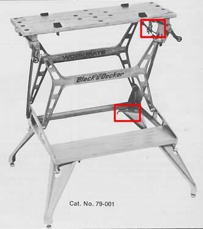

Two Workmate prototypes That never made it to production
Few Workmate owners have noticed, but Black & Decker's early North American marketing material for the Workmate, including newspaper ads, catalogs, and owner's manuals, featured images of a couple of prototype designs that never made it to market. One of these was an early design for the Workmate 79-001 Type 1, and the other was a Workmate 79-020 with a different color scheme. Take a look at the images below, and if you have ever seen one of these Workmates for real, by all means tell me about it!
The 79-001 "Type .09" Prototype from 1974
If you are familiar with the design of the Workmate 79-001 and you look closely at Black & Decker's photographs and drawings of it from its introduction in 1974 up until 1977, you'll notice that some of the details don't look quite right. I discovered this several years ago but didn't get around to a full investigation until now. After examining these early images, it's pretty clear to me that they depict what I will call a "Workmate 79-001 Type .09", a prototype for the first North American Workmate. I'm not sure whether someone at Black & Decker used the prototype photos without realizing it, or perhaps they felt that the differences were not significant enough to matter. I can say that in all of my reading and discussions about the Workmate 79-001, I've never found any mention of it before now.
In the photo below, from the introduction of the 79-001 Type 1 in the Canadian "Automotive Power Tools" catalog for 1975, I have highlighted the two features that didn't make it into production.
First, the upper frame pieces that hold the vise screws are a pared-down, lighter-weight design. In the top right, you can see two large openings in the upper frame piece, which was almost entirely solid in the production model. Also, although you can't see it in this photo, that version of the frame piece tapers down faster in height toward the back of the Workmate. Second, where the folding leg mounts to the frame, the clip to hold the leg folded is located off to one side so that it will engage the side of the leg. The standard half-round clip from the production model that would engage the top center edge of the folding leg is missing.
The 79-001 "Type .09" Prototype from 1974
If you are familiar with the design of the Workmate 79-001 and you look closely at Black & Decker's photographs and drawings of it from its introduction in 1974 up until 1977, you'll notice that some of the details don't look quite right. I discovered this several years ago but didn't get around to a full investigation until now. After examining these early images, it's pretty clear to me that they depict what I will call a "Workmate 79-001 Type .09", a prototype for the first North American Workmate. I'm not sure whether someone at Black & Decker used the prototype photos without realizing it, or perhaps they felt that the differences were not significant enough to matter. I can say that in all of my reading and discussions about the Workmate 79-001, I've never found any mention of it before now.
In the photo below, from the introduction of the 79-001 Type 1 in the Canadian "Automotive Power Tools" catalog for 1975, I have highlighted the two features that didn't make it into production.
First, the upper frame pieces that hold the vise screws are a pared-down, lighter-weight design. In the top right, you can see two large openings in the upper frame piece, which was almost entirely solid in the production model. Also, although you can't see it in this photo, that version of the frame piece tapers down faster in height toward the back of the Workmate. Second, where the folding leg mounts to the frame, the clip to hold the leg folded is located off to one side so that it will engage the side of the leg. The standard half-round clip from the production model that would engage the top center edge of the folding leg is missing.


(click to enlarge)
I would guess that the design of the upper frame pieces in the prototype was intended to reduce weight, but perhaps testing showed that they were not strong enough for the intended loads. The clip that engaged with the side of the folding leg may have turned out to be more vulnerable to damage in that location than the center-mounted clip that was eventually used.
Below are some other examples of images that depict the prototype model.
This one, from the Type 2 owner's manual 975396-01 3/76 (but still showing a Type 1) provides a good view of the large holes in the upper frame pieces, as well as the tapered frame piece.
Below are some other examples of images that depict the prototype model.
This one, from the Type 2 owner's manual 975396-01 3/76 (but still showing a Type 1) provides a good view of the large holes in the upper frame pieces, as well as the tapered frame piece.

The next set of smaller color photos is excerpted from the single-page product flyer Form 0401A. As originally published, each is only about two inches square, but now that you know what to look for, you should be able to pick out all of these differences—the large holes in the upper frame pieces, the relocated clip for the folding legs, and the significant taper at the rear of the upper frame pieces. (click to enlarge).

This one, from the earlier Type 2 owner's manual 975396-01 10/75 is similar to the first photo above, but from a slightly lower angle.

I have found many other examples that depict the prototype 79-001, some of which appear on my Documents page. It even shows up in some line drawings used in the manual for the 79-001 Type 6, of all places!
The 79-020 Prototype from 1978
In 1978 another prototype showed up in a Black & Decker catalog (Form 310 4/78), with the introduction of the 79-020 Bench Top Workmate. It might be an exaggeration to call it a prototype because it differed from the "real" 79-020 only in its dramatic charcoal and orange color scheme. The 79-020 that made it to market was a much plainer tan and gray.
You may also notice that the photos do not show the removable metal vise jaw covers that came installed on the 79-020. Instead, the covers are listed as a separate accessory, part number 79-090. The next edition of this catalog (Form 315 9/78) has the covers shown as standard, and I never ran across the 79-090 accessory jaws listed anywhere again.
The 79-020 Prototype from 1978
In 1978 another prototype showed up in a Black & Decker catalog (Form 310 4/78), with the introduction of the 79-020 Bench Top Workmate. It might be an exaggeration to call it a prototype because it differed from the "real" 79-020 only in its dramatic charcoal and orange color scheme. The 79-020 that made it to market was a much plainer tan and gray.
You may also notice that the photos do not show the removable metal vise jaw covers that came installed on the 79-020. Instead, the covers are listed as a separate accessory, part number 79-090. The next edition of this catalog (Form 315 9/78) has the covers shown as standard, and I never ran across the 79-090 accessory jaws listed anywhere again.